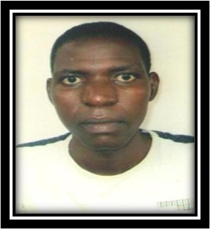

The Faculty Members

Rev. Kunle Ibikunle
Rector

Pastor Mrs. Joyce O. Akaa
Registrar

Rev. Dr. Mrs. Henrietta Emessiri
Academic Dean

Rev. Mrs. Hannah Rogho
Dean of Student Affairs

Pastor Barr. Julie N. Okorie
Center Coordinator

Rev. Babjide Abayomi Coker
Accountant
Pastor Mrs. Adeyeye Margaret Omowumi
Lecturer
Rev. Dr. Barr. (Mrs.) Gloria Ibikunle
Lecturer
Rev. Babatunde A. Idowu
Lecturer
Rev. Dr. Johnson M. O. Rogho
Lecturer
Pastor Barr. (Mrs.) Gift Okereke
Lecturer
Pastor Alabi Akinola
Lecturer
Rev. Dr. Raphael Nweke
Lecturer
Rev. Dr. Olayemi Toyin Segun
Lecturer
Rev. Akinyoade Tunji
Lecturer
Pastor Adetogun Adewuyi
Lecturer
Rev. Izirien Tunde
Lecturer
Rev. Julius Oni
Lecturer

Bro. Ibrahim John Nigge
Lecturer
Bro Mmahi Chukwuka Okoro
Lecturer
Alade Samson O.
Lecturer